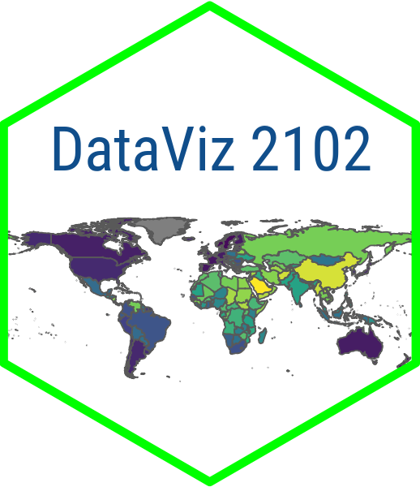

November 19, 2026
For your final project, both tracks publish to the web.
https://yourname-project.share.connect.posit.cloud| Shiny app | Quarto report | |
|---|---|---|
| Primary file | app.R |
report.qmd |
| Content type to pick | Shiny | Quarto |
| Everything else | same | same |
Example: FRED app
1. From your IDE
2. From GitHub
app.R or report.qmd, data files, helper scriptsread_csv("data/my_data.csv"), not "/Users/me/Desktop/..."setwd() and no install.packages() in your codelibrary() at the top so Connect Cloud knows what to install.csv or .rds, and publish the fileSys.getenv()FRED_API_KEY=yourkey in an .Renviron file (and never commit it)app.R (or render your report.qmd)To update: save your changes and click Publish again.
app.R or report.qmdPositron needs an renv.lock file for R projects: run renv::init() first.
Connect Cloud needs to know which packages (and versions) your project uses. From the folder with your main file, run:
This creates a manifest.json file. Re-run it whenever you add a package.
manifest.json and any data or helper files and push to a public GitHub repomain)app.R or report.qmd)main republishesecho: false hides your code so the report reads like a finished pieceembed-resources: true packs images and styles into a single HTML fileThen point to it in your text:
::: {.callout-note}) for definitions or caveatsMore: Quarto guide and our Quarto and Markdown module.
library() call, or need to re-run writeManifest()